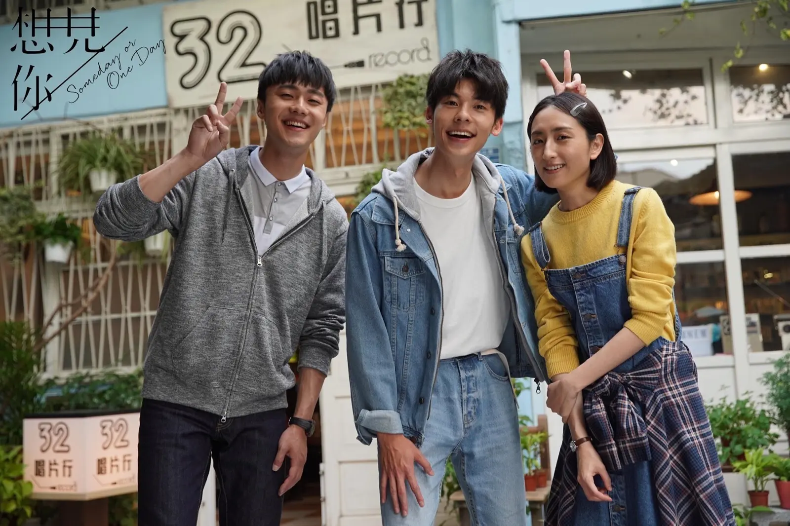
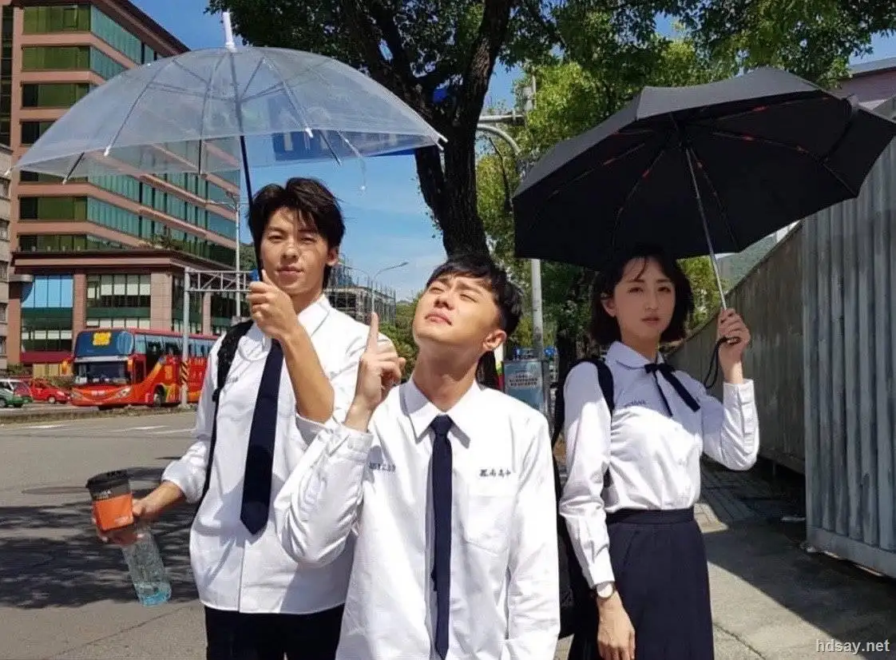
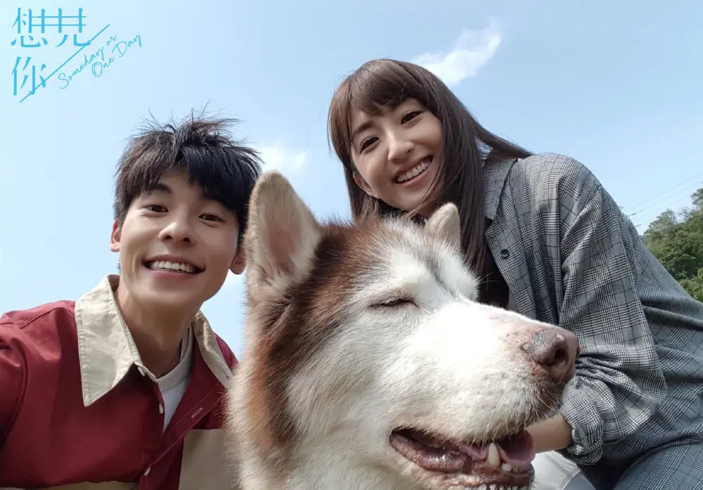
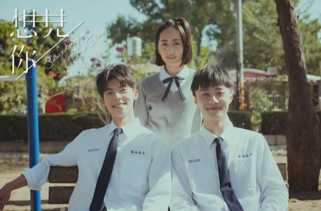
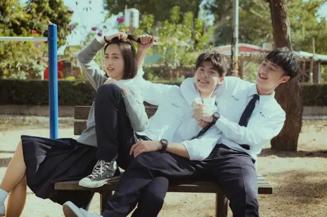
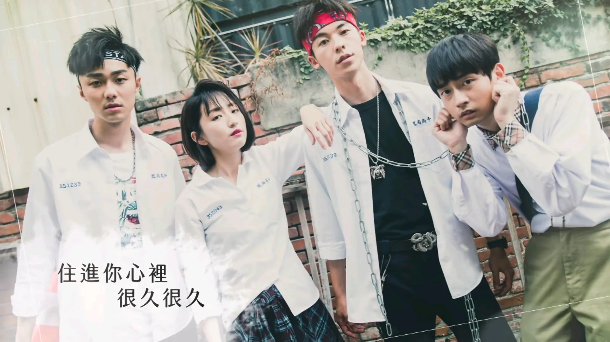
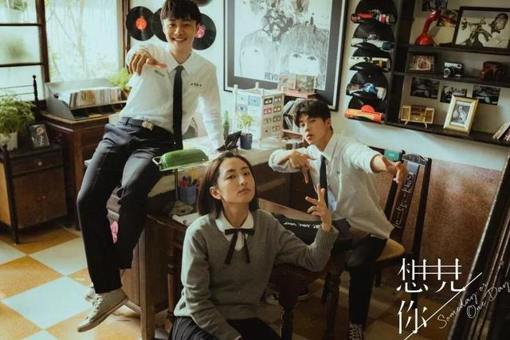
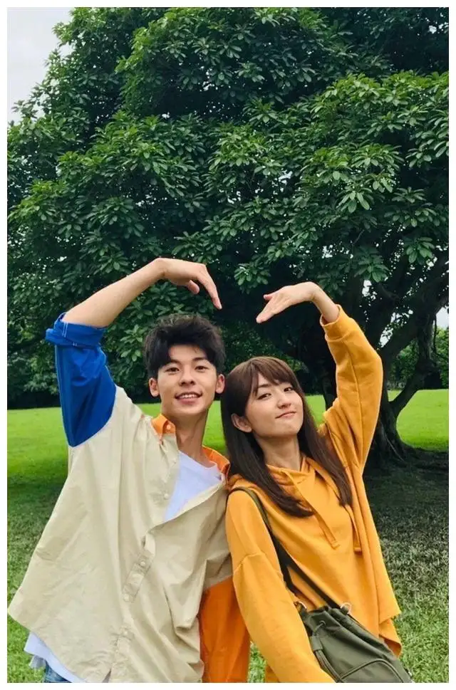

有时候
我觉得自己是宇宙中最黯淡的那颗星
拼命的发光
想要有人发现我渺小的存在
可是最后等待我的
却只有坠落
陨落的那刻 我知道
世界上没有人记得我
阳光很刺眼
可我却宁愿眯起了眼
却也舍不得闭上眼
不去看他
出门前 一句“你等很久了吗”
回家后 一封“到家记得打给我”的简讯
手牵手 一起跑过的心跳声
肩并肩 一起看着的海平线
这是我第一次 感受到如此让人安心的陪伴
也是我第一次 开始对这个世界 稍微有了那么一点的期待
我在遗憾的青春中渐渐凋零
我在失落的荒原中学会了哭泣
我在扮演自己的过程中丢弃了我自己
我在心里最深处那关着灯的房间
吟唱着
只有自己才能拥抱自己的情歌
唉，王诠胜，你知道吗?从飞机失事的那一天开始,
每个人都在跟我说，不要难过。因为，有一天，寂寞
会习惯，伤口会愈合，思念会消散，时间会带走一切
把快乐带回来。然后，我收到了他们跟我说的，生
日快乐。然后，我听到了他们跟我说，圣诞快乐。然
后，我看到了他们跟我说的，新年快乐。然后，我学
会跟自己说，情人节快乐。直到，我等到了另一个，
生日快乐。我才发现，原来时间带走的，就只有岁月
，而我，却始终，停留在原地。而你，却始终，也没
有离开过。.
也許妁在經歷過
這一切的悲傷之後
你會發現
你會那麼想要消失在這個世界上
不是因為你對這個世界太過失望
是因為你對這個世界
有太多的期望
“你难道没有这种感觉过吗？当你听到某一首歌的时候，你会感觉那首歌，好像一台时光机器一样，你总是不知不觉会随着旋律回到过去的某一个时刻，可能是某一个不经意留在你心里的微笑，又或者是，一个不留神就走进你梦里的人，又可能是，一个不小心就记得很清楚的拥抱。就像这首歌一样，会让我一直想到，从很久以前，就一直住在我心里的某一个人。你知道那个人是谁吗？”
在这等待跟你重逢的十五年以来，我没有一天，不去想我们两个之间所发生的每一件事情。我不禁会在心里面问我自己，这样的自己，是不是在这无数交错循环的时空之中，早已发生过千万次。而每一次，我都会像现在这样，无可救药地爱上那个来自未来，想要改变这一切的你。
我答应你，我绝对不会忘记你的，不管用什么方式，最后我一定会找到你。
其实你根本不必开口，我相信那时候的我，只要一看到你,他就会知道，你就是他未来唯一会爱的女生。
我喜欢你，跟我们认识多久一点关系都没有，因为打从第一次看到你，我就确定，我喜欢你。因为早在你认识我之前，我就已经深深喜欢上你了。
只有你想见我的时候，我们的相遇才有意义。
不知道为什么，当我第一次看到你的时候，我心里就有一种感觉，感觉你跟我一样，都害怕着被别人发现，我们和他们是不一样的。每次看着你一个人的时候，不知道为什么，我好像有点懂，你为什么总是让自己是一个人。因为曾经我也跟你一样，总觉得不会有人懂我，不会有人在乎我心里在想什么。不管我多么用力地喊着，都不会有听见我的声音。但我心里比谁都清楚，其实我是希望能有那么一个人是懂我的，是在乎我心里在想什么的，就算我从没有开口，他还是能听得到我的声音。我很想成为那个能懂你的人，那个能在乎你心里在想什么的人。
曾经，我也跟你一样，总觉得不会有人懂我，不会有人在乎我心里在想什么，不管我多么用力的喊着，都不会有人听得见我的声音。但我心里比谁都清楚，其实我是希望能有那么一个人是懂我的，是在乎我心里在想什么的，就算是我从没有开口，他还是听得到我的声音。







